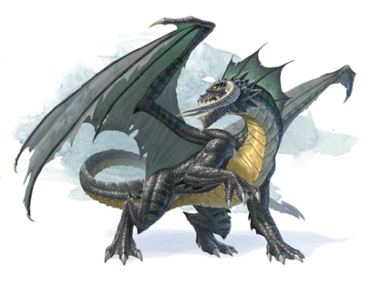

Welcome, this site is dedicated to my ongoing love for all things Dungeons and Dragons. To the left is a link if you want to learn more about D&D.

Using the navigation bar you can make your way to my miniature gallery where I have added photos of miniatures I have painted or have 3D printed and will be painting, like the goblins displayed.

Under lore you can find information on the monsters that these miniatures represent and see more photos of things I plan to print and paint in the future, like the dragon.